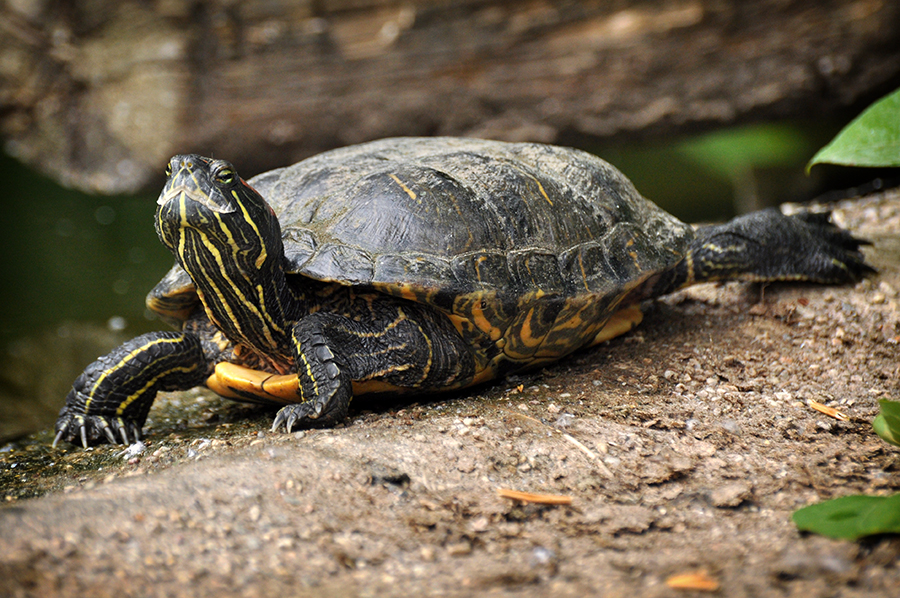
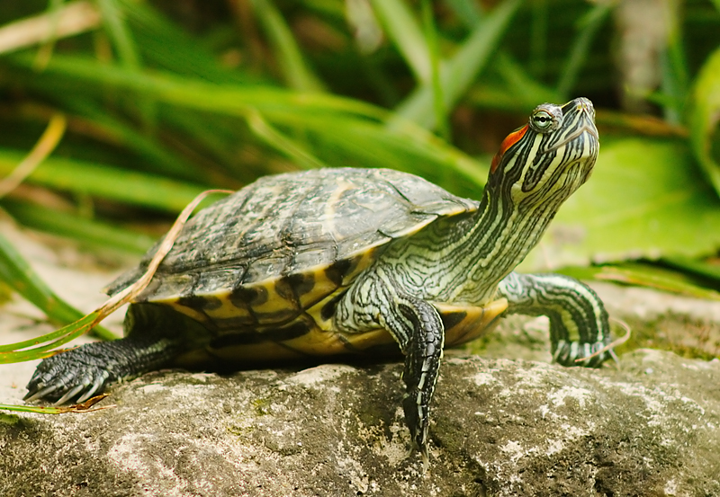
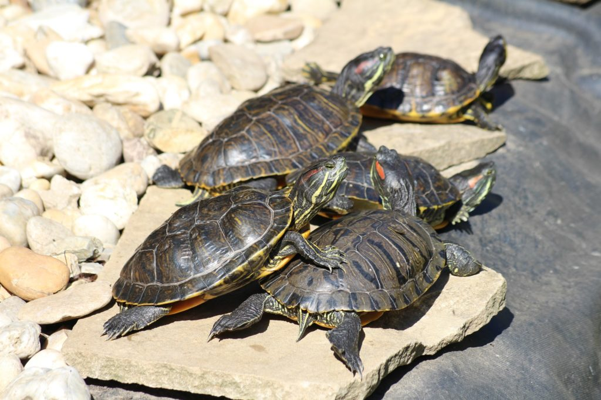

Testfelépítése

Az ékszerteknős (Trachemys scripta) a hüllők osztályának teknősök rendjébe, ezen belül a mocsáriteknős-félék családjába tartozó faj. A páncél hossza 12,5-20 centiméter, a nőstények nagyobbak a hímeknél. A hátpajzs domború, szarulemezekből áll. A színe és mintázata az egyes példányoknál változó. A mellvért, a páncél csontos alsó fele, amely összeköttetésben áll a hátpajzzsal. A szem mögött találhatók a jellegzetes vörös foltok, de a foltok néha sárgák is lehetnek. Az állat erős állcsontjain nincsenek fogak, de a szarus kávákkal szét tudja darabolni a táplálékát. Hátsó lába erős és izmos, részben úszóhártyás. Az állat a karmaival húzza magához a táplálékát. Az ékszerteknősök nagyon hosszú életűek lehetnek, akár 40 évig is élhetnek.
Környezete
Az ékszerteknős az Amerikai Egyesült Államokban Indianától Texasig megtalálható. Tavaknál és legfeljebb lassú folyású folyószakaszokon fordul elő. A közönséges ékszerteknős vadon élő állományát veszélyezteti, hogy az állatkereskedelemben nagy iránta a kereslet. Bár farmokon is tenyésztik, túl sok szabadon élő állatot fognak be.
Táplálkozása
Az ékszerteknős tápláléka vízinövények, édesvízi halak, puhatestűek és rovarok.
Szaporodása
Az ékszerteknős ivarérettséget 2-3 éves korban éri el. A párzási időszak a tavasz elején van. A nőstény évente gyakran két fészekaljat rak a homokba. Egy fészekaljban 2-22 fehér, megnyúlt alakú tojás található.
Háziállatként tartása
Az ékszerteknősök barátságosak és könnyen megszokják a környezetüket, így ideális háziállatként szolgálhatnak. Az állatokat általában terráriumban tartják, amelynek mérete legalább 120x60 centiméter legyen. Az akváriumot úgy kell kialakítani, hogy az egyik felében mintegy 120x60 centiméter alapterületű, 25 cm mélységű, úszkálásra alkalmas víz legyen, amelyet célszerű egy nagyobb teljesítményű akváriumszűrővel tisztán tartani. A másik felében pedig olyan kavics-, illetve sóderaljzatot képezzünk ki, amelyre a teknősök ki tudnak mászni. Az ékszerteknősöknek rendszeres fürdetésre van szükségük. Az állatokat hetente egyszer vagy kétszer kell fürdetni meleg vízben, hogy eltávolítsuk a piszkot és a baktériumokat a páncélról és a bőrről1. Az állatoknak szükségük van egy helyre, ahol elbújhatnak és pihenhetnek. A terráriumot rendszeresen tisztítani kell, hogy az állatok egészségesek maradjanak.

Lelki szükségletei
Az ékszerteknősök társas lények és gyakran nagy csapatokban sütkéreznek a napon. Az állatoknak szükségük van a megfelelő mennyiségű napfényre és hőmérsékletre ahhoz, hogy egészségesek maradjanak. Az állatokat nem szabad egyedül tartani, mivel ez depresszióhoz és egészségügyi problémákhoz vezethet.
Veszélyeztetettség
A vörösfülű ékszerteknős (Trachemys scripta elegans) nem fenyegetett faj, viszoont az ékszerteknősök vadon élő állományát veszélyezteti, hogy az állatkereskedelemben nagy iránta a kereslet. Bár farmokon is tenyésztik, túl sok szabadon élő állatot fognak be. Az Európai Unió betiltotta az ékszerteknősök importját, mivel az állatokat túlzottan kereskedték. Az ékszerteknősök invazív fajnak számítanak Ausztráliában, ahol tilos tartani és kereskedni velük.
